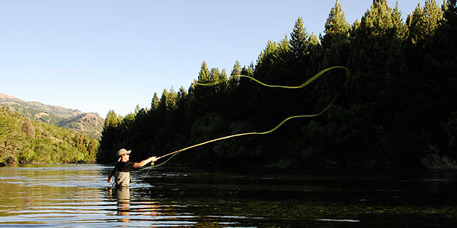
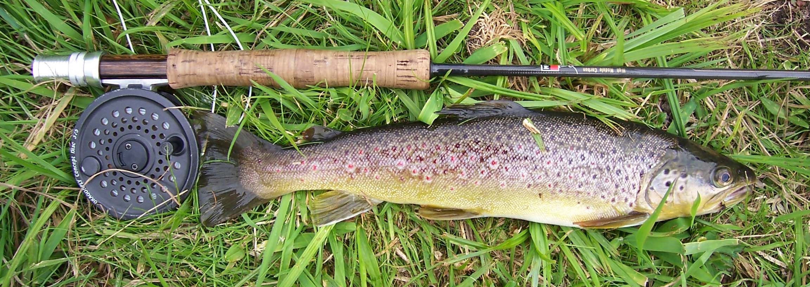

¿Que es la pesca con mosca?
La pesca con mosca (fly fishing, en inglés) es una modalidad de pesca que utiliza una caña y señuelo artificial llamado mosca. La pesca con mosca se practica usualmente en lagos, ríos y en el mar. Este tipo de pesca en su versión moderna proviene de las técnicas desarrolladas en la Gran Bretaña con un objetivo netamente recreacional, dejando de lado la histórica necesidad del hombre de pescar por alimento. Lo que se busca es no lastimar tanto al pez y poder conocer en profundidad su habitat natural, su alimentacion y sus habitos. En esta pagina hablaremos unicamente de la pesca con mosca en la Patagonia Argentina y Chilena.
 